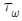
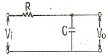
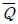
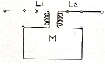
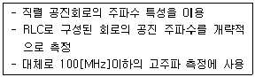
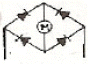
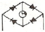
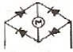
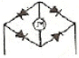

전자기기기능사 (2012-02-12 기출문제)
1과목: 전기전자공학
1. 다음 중 연산증폭기의 특징에 대한 설명으로 적합하지 않은 것은?
- 전압 이득이 매우 크다.
- 출력 저항이 매우 작다.
- 주파수 대역폭이 매우 작다.
- 동상신호제거비(CMRR)가 매우 크다.
(정답률: 73%)

2. 실생활 중에서 정전기의 원리를 응용하는 것과 거리가 먼 것은?
- 전자복사기
- 공기청정기
- 전기도금
- 차량도장
(정답률: 70%)
3. 저주파 회로에서 직류 신호를 차단하고 교류 신호를 잘 통과시키는 소자로 가장 적합한 것은?
- 커패시터(capacitor)
- 코일(coil)
- 저항(R)
- 다이오드(diode)
(정답률: 83%)
4. 다음 중 차동증폭기에 대한 설명으로 옳은 것은?
- 공통성분제거비(CMRR)가 작을수록 잡음출력이 작다.
- 교류증폭에서는 사용하지 않으며 직류증폭에만 사용한다.
- 두 입력의 차에 의한 출력과 합에 의한 출력을 동시에 얻는 방식이다.
- 차동 이득이 크고 동상 이득이 작을수록 공통성분 제거비(CMRR)가 크다.
(정답률: 69%)
5. 이상적인 연산증폭기의 두 입력전압이 같을 때 출력 전압은?
- 1[V]이다.
- 입력의 2배이다.
- 입력과 같다.
- 0[V]이다.
(정답률: 59%)
6. 다음과 같은 회로는 무슨 회로인가? (단, CR＞

이고, 는 는 입력신호의 펄스폭이다.)
는 입력신호의 펄스폭이다.)
- 미분회로
- 적분회로
- RC발진회로
- 분주회로
(정답률: 63%)
7. 평활회로의 출력 전압을 일정하게 유지시키는데 필요한 회로는?
- 안정화(정전압) 회로
- 정류회로
- 전파정류회로
- 브리지정류회로
(정답률: 89%)
8. 스위프(sweep)발진기를 옳게 설명한 것은?
- RC발진기의 일종이다.
- 2차 전자방사를 이용한 것이다.
- 발진주파수가 주기적으로 어느 비율로 변화하는 것이다.
- 인입현상을 이용한 것이다.
(정답률: 60%)
9. 2[μF] 콘덴서에 60[V]를 인가할 때 저장되는 에너지[J]는?
- 3.6× 10-3[J]
- 4.0× 10-3[J]
- 3.5× 10-4[J]
- 6.5× 10-4[J]
(정답률: 74%)
10. 10분 동안에 600[C]의 전기량이 이동했다고 하면 이 때 전류의 크기는?
- 0.1[A]
- 1[A]
- 6[A]
- 60[A]
(정답률: 80%)
11. RC직렬 회로에서 R=30[kΩ], C=1[μF]인 회로에 직류 전압 10[V]를 가했을 때의 시상수(time constant)는?
- 3[ms]
- 30[ms]
- 60[ms]
- 90[ms]
(정답률: 67%)
12. 전원주파수 60[Hz]를 사용하는 정류회로에서 120[Hz]의 맥동주파수를 나타내는 것은?
- 단상반파정류
- 단상전파정류
- 3상반파정류
- 3상전파정류
(정답률: 75%)
13. 비검파기가 리미터 역할을 하는 이유는?
- 잡음제한기가 설치되기 때문에
- 단 동조회로를 이용하여 위상검파를 하기 때문에
- 디엠파시스회로의 동작으로 잡음제한을 하기 때문에
- 출력단 대용량의 콘덴서 작용으로 펄스성 잡음을 흡수하기 때문에
(정답률: 53%)
14. 플립플롭(FF)회로의 설명으로 옳지 않은 것은?
- 비안정 멀티바이브레이터회로이다.
- 구형파 출력을 낸다.
- 직류 결합으로 되어 있다.
- 계수기회로에 쓰인다.
(정답률: 75%)
15. 다음 중 RC 결합 증폭회로에 대한 설명으로 적합하지 않은 것은?
- 주파수 특성이 좋다.
- 회로가 복잡하고 경제적이다.
- 입력 임피던스가 낮고 출력 임피던스가 높으므로 임피던스 정합이 어렵다.
- 전원 이용률이 나쁘다.
(정답률: 58%)
2과목: 전자계산기일반
16. 다음 중 옴의 법칙으로 가장 적합한 것은?
- V=I2R
- W=IQt
- V=IR
- W=IQ
(정답률: 90%)
17. 특정한 비트 또는 문자를 삭제 하는데 가장 적합한 연산은?
- AND
- OR
- MOVE
- COMPLEMENT
(정답률: 72%)
18. 다음은 데이터의 크기를 나타내는 단위들이다. 데이터의 크기순으로 옳게 나열된 것은?
- byte < word < record < bit
- bit < byte < field < record < file
- file < field < record < bit < byte
- field < record < file < byte
(정답률: 91%)
19. 순서도의 기본 유형에 속하지 않는 것은?
- 직선형 순서도
- 회전형 순서도
- 분기형 순서도
- 반복형 순서도
(정답률: 71%)
20. 4개의 입력과 2개의 출력으로 구성된 회로에서 4개의 입력 중 하나가 선택되면 그에 해당하는 2진수가 출력되는 논리 회로는?
- 디코더
- 인코더
- 반가산기
- 플립플롭
(정답률: 69%)
21. 컴퓨터에서 제어장치의 일부로, 컴퓨터가 다음에 실행할 명령의 로케이션이 기억되어 있는 레지스터는?
- 스택 포인터
- 명령 해독기
- 상태 레지스터
- 프로그램 카운터
(정답률: 75%)
22. 컴퓨터의 행동을 지시하는 일련의 순차적으로 작성된 명령어 모음을 무엇이라고 하는가?
- 하드웨어
- 플립플롭
- 프로그램
- 정보
(정답률: 79%)
23. D형 플립플롭을 사용하여 토글(toggle)작용이 일어나도록 하려 한다. 어떻게 결선하면 좋은가?
- D단 입력에 인버터를 연결한다.
- 클록펄스 입력단에 인버터를 연결한다.
- D단 입력과 출력단

를 외부 결선한다. - 클록펄스 입력단과 출력단 Q를 외부 결선한다.
(정답률: 67%)
24. dynamic RAM에 관한 설명 중 옳지 않은 것은?
- static RAM보다 속도가 빠르다.
- static RAM보다 용량이 크다.
- 주기적으로 재충전(refresh)을 해주어야 한다.
- MOS RAM 동작방식에 속한다.
(정답률: 61%)
25. 마이크로프로세서에서 누산기의 용도는?
- 명령의 해독
- 명령의 저장
- 연산 결과의 일시 저장
- 다음 명령의 주소 저장
(정답률: 88%)
26. 지정 어드레스로 분기하고 후에 그 명령으로 되돌아오는 명령은?
- 강제 인터럽트 명령
- 조건부 분기 명령
- 서브루틴 분기 명령
- 분기 명령
(정답률: 82%)
27. 2진수(11001)2 에서 1의 보수는?
- 00110
- 11001
- 10110
- 11110
(정답률: 88%)
28. 컴퓨터에서 각 구성 요소 간의 데이터 전송에 사용되는 공통의 전송로를 무엇이라 하는가?
- 버스(bus)
- 포트(port)
- 채널(channel)
- 인터페이스(interface)
(정답률: 71%)
29. 지시계기는 고정 부분과 가동 부분으로 구성되어 있는데 기능상 지시계기의 3대 요소에 속하지 않는 것은?
- 구동장치
- 가동장치
- 제어장치
- 제동장치
(정답률: 80%)
30. 다음 중 볼로미터(bolometer)전력계의 저항 소자는?
- 서미스터
- 터널 다이오드
- 바리스터
- FET
(정답률: 73%)
3과목: 전자측정
31. 수신기 내부 잡음 측정에서 잡음이 없는 경우 잡음지수는?
- 0
- 1
- 10
- 무한대
(정답률: 78%)
32. 1차 코일의 인덕턴스 4[mH], 2차 코일의 인덕턴스 10[mH]를 직렬로 연결했을 때 합성 인덕턴스는 24[mH]이었다. 이들 사이의 상호 인덕턴스는?

- 2[mH]
- 5[mH]
- 10[mH]
- 19[mH]
(정답률: 72%)
33. 다음과 같은 특징을 가지는 측정계기는?

- 동축 주파수계
- 공동 주파수계
- 계수형 주파수계
- 흡수형 주파수계
(정답률: 67%)
34. 증폭회로에서 전압 증폭도가 100이면 데시벨 이득 G는?
- 5[dB]
- 10[dB]
- 20[dB]
- 40[dB]
(정답률: 55%)
35. 디지털 전압계에서 계기의 심장부이며, 아날로그 양을 디지털 양으로 변환시키는 부분은?
- 측정량 입력부
- 입력 전환부
- A/D 변환기부
- D/A 변환기부
(정답률: 87%)
36. 측정하고자 하는 양과 일정한 관계가 있는 다른 종류의 양을 각각 직접 측정으로 구하여 그 결과로부터 계산에 의하여 측정량의 값을 결정하는 측정을 무엇이라 하는가?
- 직접측정(비교측정)
- 간접측정(절대측정)
- 편위법
- 영위법
(정답률: 59%)
37. 전류형 계기의 정류기 접속방식으로 옳은 것은?




(정답률: 68%)
38. 정재파비(VSWR)가 2일 때 반사 계수는?
- 1/2
- 1/3
- 1/4
- 1/5
(정답률: 72%)
39. 주파수 안정도와 파형이 좋기 때문에 저주파대의 기본 발진기로 사용되는 발진기는?
- 음차 발진기
- RC발진기
- 비트 발진기
- 수정 발진기
(정답률: 52%)
40. 오실로스코프로 직류에 포함된 리플(ripple)만을 측정하고자 할 때 INPUT MODE로 옳은 것은?
- DC
- AC
- GND
- DAUL
(정답률: 58%)
41. 제어량의 변화를 일으킬 수 있는 신호 중에서 기준 입력신호 이외의 것은?
- 제어동작 신호
- 외란
- 주되먹임 신호
- 제어 편차
(정답률: 77%)
42. 2종류의 금속으로 구성되는 회로에 전류를 흘렸을 때, 그 접합점에 열의 흡수 발생이 일어나는 현상은?
- 펠티어 효과
- 톰슨 효과
- 지벡 효과
- 줄 효과
(정답률: 78%)
43. 다음 중 레이더의 초단파 발진관으로 사용되는 것은?
- 전자 혼(horn)
- 자전관(magnetron)
- TR 관(transmit-receive tube)
- ATR 관(anti-transmit-receive tube)
(정답률: 55%)
44. 수신기의 성능을 표시하는 요소 중 옳지 않은 것은?
- 선택도
- 충실도
- 변조도
- 안정도
(정답률: 68%)
45. FM 수신기에 필요한 요소가 아닌 것은?
- 저주파증폭회로
- 주파수판별회로
- 변조회로
- 주파수혼합회로
(정답률: 56%)
4과목: 전자기기 및 음향영상기기
46. 다음 각 항법장치의 설명 중 옳은 것은?
- TACAN : 전파의 도래 방향을 자동적으로 측정한다.
- ADF : 두국 A, B의 전파의 도래 시간차를 측정한다.
- VOR : 사용주파수는 108[MHz]~118[MHz]의 초단파를 사용한다.
- 로란(Loran) : 지상국으로부터 방위와 거리를 측정하는 시스템이다.
(정답률: 69%)
47. VTR의 기록방식에서 기록헤드와 재생헤드의 갭을 ∅도 만큼 기울여 재생할 때의 장점은?
- 휘도신호의 크로스 토크가 제거된다.
- 테이프 속도가 증가한다.
- 장시간 기록 재생된다.
- 테이프를 좁게 사용할 수 있다.
(정답률: 65%)
48. 다음 중 음압의 단위는?
- [N/C]
- [dB]
- [μbar]
- [Neper]
(정답률: 84%)
49. VHS 방식 VTR의 설명으로 옳은 것은?(오류 신고가 접수된 문제입니다. 반드시 정답과 해설을 확인하시기 바랍니다.)
- 병렬(parallel) 로딩 기구에 의한 M자형 로딩
- 큰 헤드 드럼에 낮은 테이프 속도
- 리드 테이프에 의한 종단 검출 방식
- 1모터에 의한 안정된 구동 방식
(정답률: 58%)
50. 슈퍼헤테로다인 수신기에서 영상주파수는?
- 중간주파수와 같다.
- 국부발진주파수와 같다.
- (국부발진주파수 - 중간주파수)와 같다.
- (국부발진주파수 + 중간주파수)와 같다.
(정답률: 69%)
51. 채널을 선택하고 수신된 고주파를 증폭, 주파수를 변환하여 중간 주파수를 얻는 회로는?
- 편향 회로
- 튜너 회로
- 음성신호 회로
- 동기분리 회로
(정답률: 61%)
52. 전자냉동의 원리에 대한 설명으로 틀린 것은?
- 펠티어 효과를 이용한 것이다.
- 펠티어 효과는 물질에 따라 다르다.
- 펠티어 효과는 접점을 통과하는 전류에 반비례한다.
- 펠티어 효과가 클수록 효과적인 냉각기를 얻을 수 있다.
(정답률: 76%)
53. 광학 현미경과 전자현미경의 차이점에 대한 설명으로 가장 옳은 것은?
- 광학 현미경에서는 시료 위의 정보를 전하는 매개체로 빛과 전자를 동시에 사용한다.
- 광학 현미경은 매개체로 빛과 광학렌즈를, 전자 현미경은 매개체로 전자 빔과 전자렌즈를 사용한다.
- 전자 현미경은 전자선을 오목렌즈에 이용하고, 광학 현미경은 볼록렌즈을 사용한다.
- 전자 현미경은 볼록렌즈에 전자선을 사용하고, 광학 현미경은 오목렌즈에 전자선을 이용한다.
(정답률: 75%)
54. 수면에서 수직으로 초음파를 방사하여 수신되기까지의 시간이 3초 소요되었다면 물의 깊이는? (단, 이 물속에서 초음파의 속도는 1530[m/s]이다.)
- 1530[m]
- 3060[m]
- 4590[m]
- 2295[m]
(정답률: 63%)
55. 텔레비전의 고압 전원은 어떻게 얻어 내는가?
- 부스터 회로에서 얻어낸다.
- B전원을 3배 전압 하여 얻어낸다.
- 전원 트랜스를 승압하여 얻어낸다.
- 수평귀선 기간에 일어나는 펄스를 승압하여 얻어낸다.
(정답률: 51%)
56. 유전가열의 공업상의 응용에 있어서 옳지 않은 것은?
- 고무의 가황
- 섬유류의 염색
- 목재의 건조
- 섬유류의 건조
(정답률: 71%)
57. 서보 기구에 대한 설명으로 옳지 않은 것은?
- 추종속도가 빨라야 한다.
- 서보 모터의 관성은 작아야 한다.
- 일반적으로 조작력이 약해야 한다.
- 제어계 전체의 관성이 클 경우에는 관성의 비가 적을지라도 토크가 큰 편이 좋다.
(정답률: 69%)
58. 다음 중 전기식 조절계에서 가장 많이 사용되는 방식은?
- 비례동작
- 온⋅오프동작
- 비례적분동작
- 비례적분미분동작
(정답률: 68%)
59. 오디오의 재생 주파수 대역을 몇 개의 대역으로 나누어 각각의 대역내의 주파수 특성을 자유자재로 바꿀 수 있는 기능은?
- 믹싱 앰프
- 채널 디바이더
- 그래픽 이퀄라이저
- 라우드니스 컨트롤
(정답률: 69%)
60. 녹음기에서 테이프를 일정한 속도로 움직이게 하는 것은?
- 핀치롤러와 캡스턴
- 핀치롤러와 텐션암
- 캡스턴과 테이프 가이드
- 테이프 가이드와 테이프 패드
(정답률: 78%)